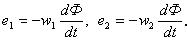
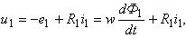

Принцип работы трансформатора основан на явлении взаимной индукции. При этом трансформатор обеспечивает передачу электрической энергии от первичной электрической цепи (обмотки) во вторичную, изменяя значения таких электрических параметров, как ЭДС, напряжение, ток, не меняя их частоты. Первичная обмотка подключается к источнику переменного тока – к электрической сети с напряжением u1, к вторичной обмотке присоединяется приёмник электрической энергии (нагрузка) с сопротивлением Zн.
При подключении трансформатора к сети с синусоидальным напряжением u1 в первичной обмотке протекает ток i1, при этом магнитодвижущая сила (МДС) первичной обмотки F1 = w1i1 возбуждает магнитный поток Ф, который замыкается, в основном, по магнитопроводу. Магнитный поток Ф индуктирует в обеих обмотках трансформатора ЭДС (рис. 6.1б): е1 = е1L (ЭДС самоиндукции) и е2 = е2м (ЭДС взаимной индукции), пропорциональные числу витков w1 и w2 обмоток и скорости изменения магнитного потока, т.е.

Магнитный поток Ф2, возбужденный МДС вторичной обмотки F2 = w2i2, согласно принципу Ленца, направлен навстречу потоку Ф1, созданному в магнитопроводе током первичной обмотки i1, т.е. поток Ф2 стремится размагнитить магнитопровод, нарушая тем самым электрическое состояния (равновесие) в первичной обмотке;

где R1 – активное сопротивление первичной обмотки.
Появление тока i2 и магнитного потока Ф2 во вторичной обмотке вызывает увеличение тока i1 ровно настолько, чтобы скомпенсировать размагничивающее действие вторичного тока и сохранить суммарный магнитный поток Ф в магнитопроводе неизменным.
 |
|